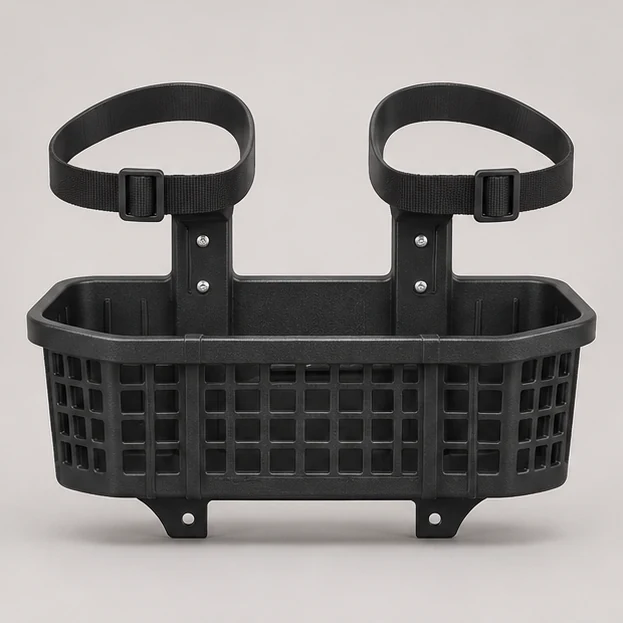

Storage & dash
Rear Sweater Basket
Part No. 602742
$199.95 USD
An open basket behind the front bench gives a jacket or towel a place to ride above the bag well.
Vehicle fitment
E-Z-GO RXV · 2008–2023
Check fit detailsRetailer sets final price, availability and shipping.
Will it fit?
| Model | Catalog years |
|---|---|
| E-Z-GO RXV | 2008–2023 |
Check that the original sweater-basket mounts and golf bag area remain on the cart. A rear bench or cargo conversion can replace that mounting area.
Installation notes
- Empty the rear bag area and note how the old basket and straps sit behind the seat.
- Compare the replacement mounts with the originals. Support the basket while removing the old assembly and fitting the new one to the factory supports.
- Thread the straps around the bags and close each buckle. Check that the basket and both bags remain secure before driving.